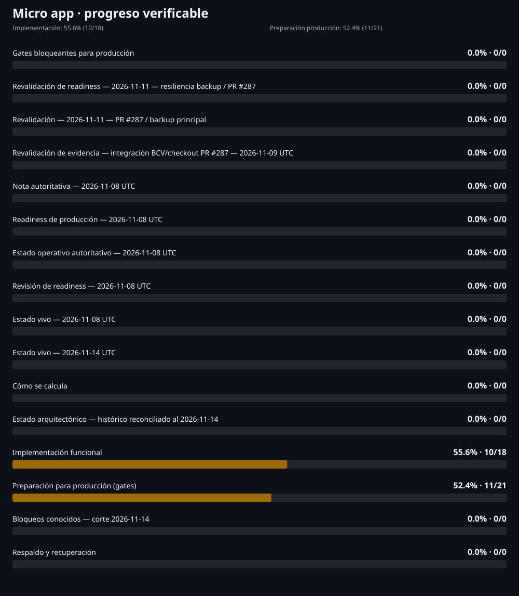

Micro app — progreso y preparación para producción

Los porcentajes cuentan criterios inventariados con evidencia, no estiman fechas ni garantizan producción.
| Área | Completado | Porcentaje |
|---|
| Gates bloqueantes para producción | 0/0 | 0.0% |
|---|
| Revalidación de readiness — 2026-11-11 — resiliencia backup / PR #287 | 0/0 | 0.0% |
|---|
| Revalidación — 2026-11-11 — PR #287 / backup principal | 0/0 | 0.0% |
|---|
| Revalidación de evidencia — integración BCV/checkout PR #287 — 2026-11-09 UTC | 0/0 | 0.0% |
|---|
| Nota autoritativa — 2026-11-08 UTC | 0/0 | 0.0% |
|---|
| Readiness de producción — 2026-11-08 UTC | 0/0 | 0.0% |
|---|
| Estado operativo autoritativo — 2026-11-08 UTC | 0/0 | 0.0% |
|---|
| Revisión de readiness — 2026-11-08 UTC | 0/0 | 0.0% |
|---|
| Estado vivo — 2026-11-08 UTC | 0/0 | 0.0% |
|---|
| Estado vivo — 2026-11-14 UTC | 0/0 | 0.0% |
|---|
| Cómo se calcula | 0/0 | 0.0% |
|---|
| Estado arquitectónico — histórico reconciliado al 2026-11-14 | 0/0 | 0.0% |
|---|
| Implementación funcional | 10/18 | 55.6% |
|---|
| Preparación para producción (gates) | 11/21 | 52.4% |
|---|
| Bloqueos conocidos — corte 2026-11-14 | 0/0 | 0.0% |
|---|
| Respaldo y recuperación | 0/0 | 0.0% |
|---|
Bloqueos
- Smoke autenticado live en `https://micro-app-63i.pages.dev` con Brave Shields ACTIVADO, incluyendo verificación de la tasa BCV real disponible en Neon main.
- E2E real de los flujos comerciales completos contra API/DB de prueba, sin mocks de red.
- Rate limiting runtime en rutas sensibles y protección contra abuso, revisados con pruebas negativas y límites operativos.
- Aceptación formal humana del objetivo RPO aproximado de 24 h y del RTO operativo aceptable.
- Revisión legal, fiscal y contable por asesoría competente y aprobación explícita del lanzamiento; Issue #53 permanece OPEN/P0.
- Monitorización y alertas activas de `BCV_SYNC_FAILED`, más watchdog probado para estados `running` estancados.
- Pruebas E2E de ventas, inventario, caja y devoluciones en móvil/escritorio con API/DB reales de prueba.
- Accesibilidad por teclado/lector y UX responsive final verificadas.
- Logs operativos, retención y soporte revisados sin exponer secretos ni datos sensibles.
- Límites gratuitos/capacidad y ausencia de cargos automáticos revalidados antes del GO/NO-GO.
Fuente: docs/PRODUCTION_READINESS.md · Se genera automáticamente desde el checklist.